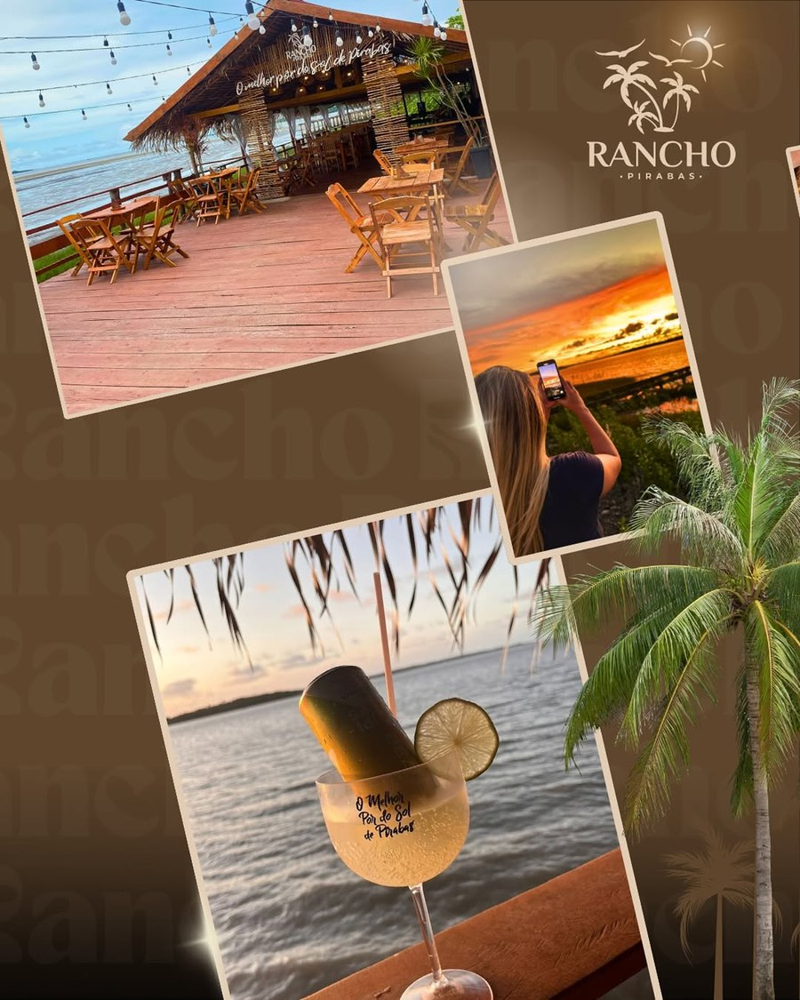
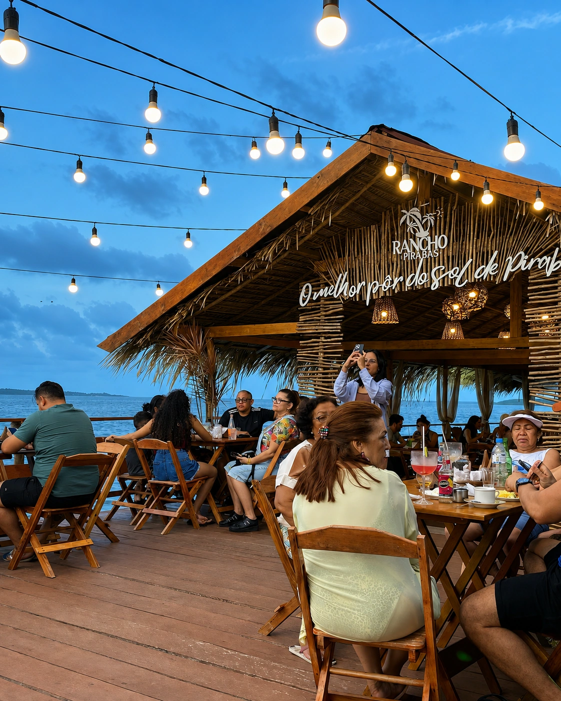

Pôr do sol único
Vista aberta para o mar, sem obstruções — o motivo número um pelo qual as pessoas voltam.

Rancho PirabasSimplicidade e bom gosto em meio à natureza. Drinks, petiscos e uma vista de tirar o fôlego, à beira do mar, todo fim de semana.
O Rancho Pirabas nasceu para ser o point do pôr do sol em São João de Pirabas. Em meio à natureza do Salgado Paraense, o espaço reúne deck de madeira, palha, boa música e uma vista privilegiada para quem busca simplicidade e bom gosto.
Funciona de sexta a domingo, das 16h às 23h — o horário perfeito para acompanhar o pôr do sol sobre o mar com um drink na mão, petiscos na mesa e a companhia de quem você gosta.

Os diferenciais mais citados por quem já conhece o Rancho Pirabas.
Vista aberta para o mar, sem obstruções — o motivo número um pelo qual as pessoas voltam.
Em São João de Pirabas, no coração do Salgado Paraense, o Rancho é cercado pela natureza.
Cardápio pensado para acompanhar o entardecer, do café da tarde aos drinks da noite.
Ambiente reservado para confraternizações, aniversários e encontros em grupo.
Fotos reais do Rancho — do pôr do sol ao cardápio, para você sentir o clima do entardecer por aqui.



@ranchopirabas
Mais de 29 mil seguidores já acompanham por lá o pôr do sol de cada fim de semana, os bastidores e as novidades do cardápio. Siga a gente para não perder nenhum pôr do sol!
Seguir no InstagramAvaliações reais de visitantes no Google.
Ambiente inserido no mangue! Comida excelente! Pôr do sol magnífico!
Belíssimo lugar com decoração rústica à beira-mar. É possível apreciar um bom café com pratos típicos. A tapioca molhada com leite de coco é divina!
Local maravilhoso para curtir o pôr do sol ou a noite com os amigos. Perfeito para o café da tarde ou um date romântico à noite.
Em São João de Pirabas, a cerca de 200 km de Belém, no Salgado Paraense.
Tv. da Glória, São João de Pirabas — PA
Sexta a domingo — das 16h às 23h
Fale diretamente com o Rancho Pirabas pelos canais abaixo.